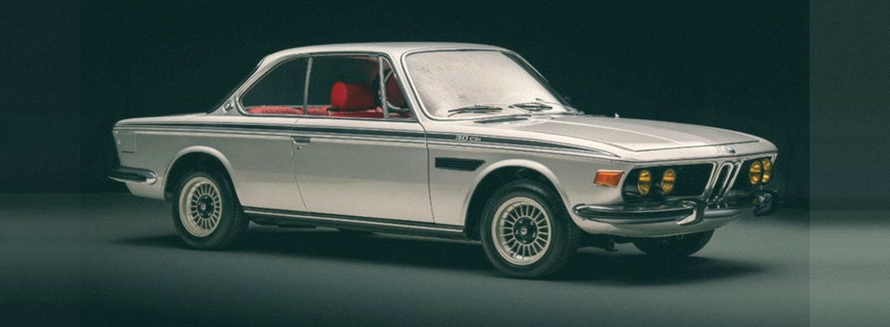

Operating Excellence
Building practical operating systems, governance structures and execution disciplines.
Systems move people forward
I design and implement practical operating systems for automotive businesses — turning complexity into clarity, and plans into performance.

OPERATING EXCELLENCE
BUSINESS TRANSFORMATION
About
I work across operations, process transformation and business improvement — translating complex requirements into practical systems, clearer processes and measurable operating discipline.
My experience spans automotive after-sales, dealer operations, digital transformation, SOP architecture, KPI systems and implementation.
Expertise
Building practical operating systems, governance structures and execution disciplines.
Mapping, simplifying and standardising complex processes through SOPs, workflows and operating models.
Designing KPI structures, performance reviews, dashboards and measurement frameworks.
Connecting business processes, technology and implementation to improve visibility, adoption and execution.
Selected professional experience
Professional experience across automotive OEM, dealership and after-sales environments. These are examples of work and exposure — not products or businesses owned by Kiran.
AI-enabled quality analysis and digital quality monitoring.
Digital after-sales and customer communication workflows.
Process architecture, SOP standardisation and DMS mapping.
Digital learning, dealer enablement and performance systems.
Domain experience
Experience across OEMs, dealerships and after-sales ecosystems.
Digital quality &
dealer enablement
Process optimisation &
service excellence
After-sales process &
audit systems
Bodyshop process &
technical manual
Brand names indicate professional domain experience only. They do not imply a current engagement, endorsement or ownership. All trademarks belong to their respective owners.
Approach
Understand the current state.
Make the system visible.
Build the operating model.
Translate design into execution.
Create visibility and accountability.
Continuously improve the system.
“Complexity, when understood, creates opportunity.”
KIRAN KULKARNI
Contact
If you are building, transforming or scaling an operating system, let's talk.